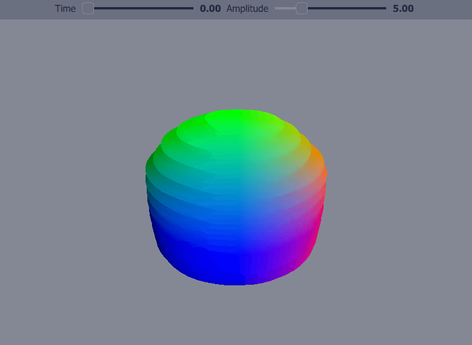

Qt Quick 3D - Custom Shaders Example
Demonstrates the use of custom vertex and fragment shaders.
This example demonstrates using a custom material composed by a vertex and a fragment shader.

Implementing a custom material
Uniforms used in the shader are declared in the CustomMaterial and the declaration is added dynamically to the shader file by the shader generator. ShaderInfo includes GLSL version that is also added to the shaders, so version declaration is not allowed in the custom shaders themselves.
Each shader is implemented in a separate shader file. In this example, the vertex shader is defined in example.vert and the fragment shader in example.frag. Each shader has to be declared in QML and the stage set appropriately. A custom pass using those particular shaders is also needed.
In this example, a mesh is deformed by the vertex shader according to a sine function. The end result is controlled by two sliders corresponding to the time and amplitude values of the sine function. The fragment shader is used to color the mesh according to the position values of the vertices.
CustomMaterial { property real time: 0.0 property real amplitude: 5.0 shaderInfo: ShaderInfo { version: "330" type: "GLSL" } Shader { id: vertShader stage: Shader.Vertex shader: "example.vert" } Shader { id: fragShader stage: Shader.Fragment shader: "example.frag" } passes: [ Pass { shaders: [ vertShader, fragShader ] } ] }
Using a custom material
A custom material using custom shaders is used the same way as any other material. The uniforms in the shader can be easily updated with property bindings in the QML.
Model { position: Qt.vector3d(0, 0, 0) scale: Qt.vector3d(2, 2, 2) source: "#Sphere" materials: [ ExampleMaterial { id: exampleMaterial time: control.time amplitude: control.amplitude } ] }
Files: